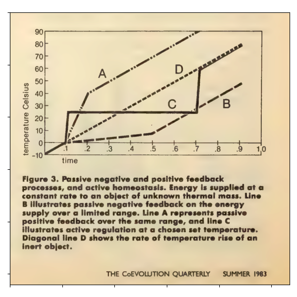

<
^
>
Planetary Cybernetics by Selection and Self-Organization
Rive Sunder
TOKYO AAI #12 EA
東京市港区
2025/09/05

From James Lovelock 'Daisy World: A Cybernetic Proof of the Gaia Hypothesis' in
Coevolutionary Quarterly Summer 1983, p. 68